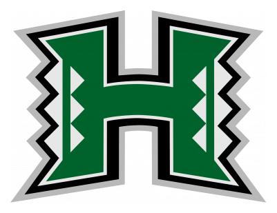
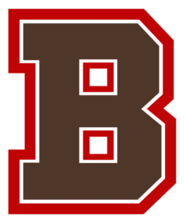
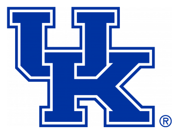
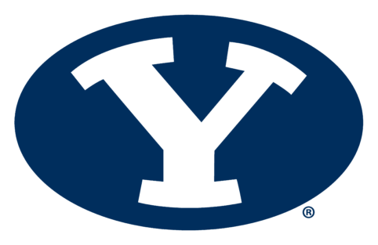
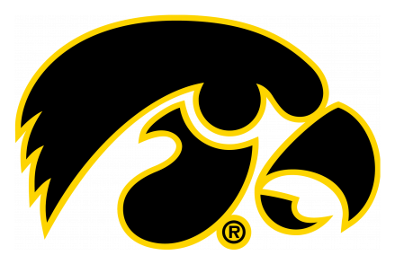
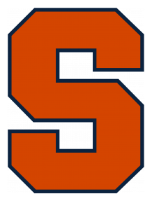
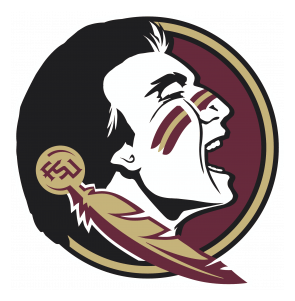
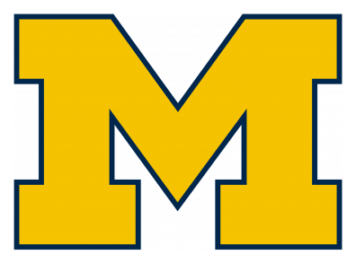

NCAA 180 Top 25
Top 25 Score (first-place votes)
| Rk | Team | Score | |||
|---|---|---|---|---|---|
| 1 | – |  | Washington State6-0 · PAC 12 | +1.91 | (2) |
| 2 | ▲1 |  | Hawaii5-1 · Mountain West | +1.75 | |
| 3 | ▲2 | Baylor5-1 · Big 12 | +1.71 | (1) | |
| 4 | ▲2 | Dartmouth6-0 · Ivy | +1.70 | ||
| 5 | ▲3 |  | Middle Tennessee State6-0 · CUSA | +1.68 | (2) |
| 6 | ▲3 |  | Arizona State5-1 · PAC 12 | +1.65 | |
| 7 | ▲5 |  | Brown5-1 · Ivy | +1.61 | (1) |
| 8 | ▲8 |  | Campbell6-0 · Pioneer | +1.57 | |
| 9 | ▲2 |  | Kentucky6-0 · SEC | +1.53 | |
| 10 | ▲8 |  | BYU6-0 · Mountain West | +1.51 | |
| 11 | ▼1 | Colorado6-0 · PAC 12 | +1.51 | ||
| 12 | ▲2 |  | Kansas State6-0 · Big 12 | +1.50 | (1) |
| 13 | ▼6 |  | Youngstown State6-0 · Big Sky | +1.46 | |
| 14 | ▼1 |  | Iowa5-1 · Big 10 | +1.42 | |
| 15 | ▼13 |  | William & Mary5-1 · Big Sky | +1.37 | |
| 16 | ▲6 |  | North Carolina A&T5-1 · HBCU | +1.33 | |
| 17 | ▼13 |  | Syracuse4-2 · Big East | +1.31 | |
| 18 | ▼1 |  | Southern Miss5-1 · Sun Belt | +1.30 | |
| 19 | ▼4 |  | Portland State4-2 · Big Sky | +1.30 | (1) |
| 20 | ▲4 |  | Old Dominion5-1 · Wild | +1.28 | |
| 21 | NEW |  | Georgia State5-1 · CUSA | +1.27 | |
| 22 | ▲3 | Georgetown4-2 · Ivy | +1.19 | ||
| 23 | NEW |  | FSU5-1 · ACC | +1.18 | |
| 24 | ▼3 | Clemson5-1 · ACC | +1.17 | ||
| 25 | NEW |  | Michigan4-2 · Big 10 | +1.16 |
Others receiving votes: Montana +1.13, Tulsa +1.10, UT Martin +1.06, Minnesota +0.86, Southern +0.85, LSU +0.80, Missouri +0.80, Nebraska +0.77, West Virginia +0.74, North Alabama +0.68, Montana State +0.68, South Carolina +0.65, Mississippi State +0.42
Dropped out: Minnesota, Auburn, Coastal Carolina
Ranked games Week 7
- #2 HawaiiVS#10 BYUMountain West
- #1 Washington StateVSArizonaPAC 12
- #3 BaylorVSMissouriBig 12
- #4 DartmouthVSColumbiaIvy
- #5 Middle Tennessee StateVSLouisianaCUSA
- #6 Arizona StateVSOregon StatePAC 12
- #7 BrownVSHarvardIvy
- #8 CampbellVSAustin PeayPioneer
- #9 KentuckyVSArkansasSEC
- #11 ColoradoVSWashingtonPAC 12
- #12 Kansas StateVSWest VirginiaBig 12
- #13 Youngstown StateVSStony BrookBig Sky
- #14 IowaVSOhio StateBig 10
- #15 William & MaryVSMaineBig Sky
- #16 North Carolina A&TVSSouthernHBCU
- #17 SyracuseVSUSFBig East
- #18 Southern MissVSTulsaSun Belt
- #19 Portland StateVSVillanovaBig Sky
- #20 Old DominionVSWichita StateWild
- #21 Georgia StateVSTexas StateCUSA
- #22 GeorgetownVSLehighIvy
- #23 FSUVSMiamiACC
- #24 ClemsonVSGeorgia TechACC
- #25 MichiganVSNebraskaBig 10
Gold bar: ranked vs. ranked.
Bot ballots Struck = dropped (best and worst) · how each bot works
| Rk | Team | SCB | VEG | BAND | SOR | HEAD | HAM | BAG | PROF |
|---|---|---|---|---|---|---|---|---|---|
| 1 | Washington State | 1 | 1 | 3 | 12 | 34 | 2 | 9 | 2 |
| 2 | Hawaii | 10 | 2 | 19 | 8 | 12 | 5 | 3 | 7 |
| 3 | Baylor | 11 | 4 | 17 | 17 | 2 | 7 | 1 | 3 |
| 4 | Dartmouth | 5 | 6 | 11 | 3 | 19 | 4 | 14 | 9 |
| 5 | Middle Tennessee State | 2 | 3 | 10 | 1 | 9 | 15 | 33 | 1 |
| 6 | Arizona State | 12 | 11 | 14 | 4 | 4 | 16 | 10 | 4 |
| 7 | Brown | 15 | 30 | 1 | 5 | 3 | 36 | 5 | 20 |
| 8 | Campbell | 7 | 23 | 7 | 7 | 37 | 8 | 20 | 8 |
| 9 | Kentucky | 6 | 18 | 2 | 13 | 22 | 12 | 22 | 13 |
| 10 | BYU | 8 | 21 | 18 | 14 | 13 | 10 | 32 | 16 |
| 11 | Colorado | 3 | 10 | 8 | 20 | 15 | 3 | 39 | 10 |
| 12 | Kansas State | 4 | 5 | 13 | 18 | 23 | 1 | 37 | 6 |
| 13 | Youngstown State | 9 | 22 | 87 | 2 | 29 | 6 | 21 | 11 |
| 14 | Iowa | 17 | 16 | 12 | 11 | 8 | 22 | 27 | 12 |
| 15 | William & Mary | 13 | 8 | 35 | 22 | 11 | 17 | 16 | 5 |
| 16 | North Carolina A&T | 14 | 13 | 4 | 92 | 10 | 14 | 30 | 18 |
| 17 | Syracuse | 38 | 12 | 32 | 84 | 6 | 9 | 4 | 23 |
| 18 | Southern Miss | 18 | 15 | 26 | 37 | 18 | 18 | 12 | 22 |
| 19 | Portland State | 37 | 9 | 28 | 38 | 1 | 25 | 8 | 19 |
| 20 | Old Dominion | 20 | 32 | 31 | 41 | 7 | 20 | 6 | 21 |
| 21 | Georgia State | 21 | 17 | 16 | 93 | 14 | 11 | 34 | 24 |
| 22 | Georgetown | 36 | 7 | 9 | 94 | 20 | 33 | 17 | 27 |
| 23 | FSU | 19 | 14 | 24 | 6 | 47 | 31 | 42 | 17 |
| 24 | Clemson | 16 | 28 | 44 | 45 | 28 | 13 | 13 | 15 |
| 25 | Michigan | 41 | 20 | 6 | 52 | 17 | 19 | 24 | 29 |
SCB Scoreboard: Exactly the playoff rank: wins, then points for · VEG Vegas: Expected wins vs. every other team, every week · BAND Bandwagon: All-play over the last 3 weeks, weighted 3:2:1 · SOR SOR: Strength of Record: how hard your record would be for a top-25 team to match · HEAD Headliner: Best possible lineup per game · HAM Hammer: How hard you win (and lose), ranked against that week's games · BAG Bagman: Redraft market value of the best starting lineup (FantasyCalc) · PROF Professor: Starts with preseason roster strength, rewards quality weeks midseason, finishes on the resume
Archive 2026
Each of the 8 bots rates every team; ratings are put on one scale (standard deviations from the average team). For each team the best and worst bot are dropped (BCS style) and the rest averaged = Score. Others receiving votes: in at least one counted bot's top 25. (First-place votes) = bots ranking the team #1. How it works · Raw CSV · Bot ballots CSV